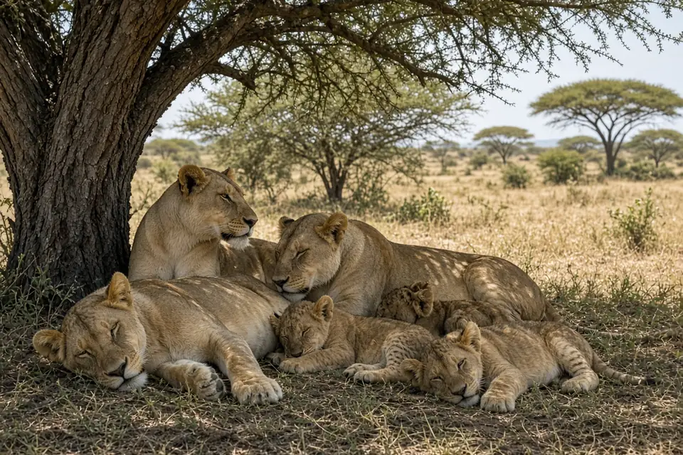

Home › Blog › What do lions eat?
What do lions eat? Prey preferences from 32 studies
Lions eat mainly large hoofed mammals. A review of 32 diet studies across the lion's range found that lions prefer prey weighing roughly 190 to 550 kg, with a peak preference around 350 kg, and that gemsbok, buffalo, wildebeest, giraffe and zebra are the species they significantly prefer. They also take smaller animals such as warthogs, and in a few places they even hunt elephants. What a lion actually eats depends on what lives nearby, how hard it is to catch, and how many lions are hunting together.
The big picture: a taste for large prey
Matt Hayward and Graham Kerley (Journal of Zoology, 2005) pulled together 32 studies of lion diet covering 48 different places or time periods across the species' range. Instead of simply listing what lions ate, they compared each prey species' share of kills with how common that species was in the area. That shows which animals lions seek out and which they pass over.
The results were clear:
- Lions preferentially hunt species within a weight range of about 190 to 550 kg.
- The single most preferred prey weight was about 350 kg.
- The mean weight of the significantly preferred species was 290 kg.
- Species outside the preferred weight range were generally avoided.
For comparison, the same approach applied to leopards found a preferred range of only 10 to 40 kg, with a peak around 25 kg (Hayward and colleagues, 2006). Lions are aiming at prey several times heavier than the solitary leopard usually tackles. See how the two cats differ on our big cat comparison page.
The lion's favourite prey species
| Prey | Status in the 2005 review |
|---|---|
| Cape buffalo | Significantly preferred |
| Blue wildebeest | Significantly preferred |
| Plains zebra | Significantly preferred |
| Giraffe | Significantly preferred |
| Gemsbok (oryx) | Significantly preferred |
| Warthog | Taken in line with availability, despite being small |
| Roan, sable, eland | In the right size range, but not significantly preferred |
Why would lions skip roan, sable and eland, which fall in the ideal weight range? The authors pointed to defences: sable carry long, dangerous horns, roan and sable often live at low density, and eland form large herds with high vigilance. Warthogs, by contrast, are below the preferred weight but are still taken about as often as they are encountered, probably because they share lion habitat, are relatively slow to escape, and are less vigilant.

Why lions go for big animals
When Hayward and Kerley plotted preference against prey body mass, the curve was bell shaped but skewed towards heavier animals. They argued that the skew comes from collective hunting: lions working together can bring down animals that a single lion would struggle with. Field studies support the link between teamwork and prey size. In South Africa's Kruger National Park, Funston, Mills and Biggs (2001) found that female lions mainly selected medium sized prey such as zebra and wildebeest, while males mainly caught buffalo. Read more about cooperation in why do lions live in prides?
Small kills still matter
A preference for large prey does not mean lions ignore small animals. On the open plains of Etosha National Park, Namibia, Philip Stander (Canadian Journal of Zoology, 1992) found that prey under 50 kg made up 73% of observed kills, but only about half of the estimated biomass eaten, because one large kill provides so much meat. Lionesses there took in on average 8.7 kg of food per day in the dry season and 14 kg per day in the wet season, and the lions rarely scavenged.
Choice also depends on the moment. In the Serengeti, Dennis Scheel (Behavioral Ecology, 1993) found that lions preferred to hunt small groups of prey, groups closer than 200 metres, and groups containing warthogs, wildebeest or zebra. Our article on how often lion hunts succeed explains how these choices affect the odds.
Do lions hunt elephants?
In a few places, yes. Researchers have documented lions hunting elephants in Botswana's Chobe National Park (Joubert, African Journal of Ecology, 2006), and Power and Shem Compion (African Zoology, 2009) studied lion predation on elephants in the Savuti area of the same park. These records come from specific areas. Elephants sit far above the preferred weight range found in the continent wide review, so they should not be thought of as typical lion prey.
Local menus differ
Because the 2005 review measured preference against what was locally available, it shows lions choosing among the animals around them rather than following one fixed menu, and each population works with the prey its area offers. Where they hunt also matters: Serengeti lions fed in spots where prey were easy to catch, not necessarily where prey were most abundant (Hopcraft, Sinclair and Packer, 2005). Learn about the landscapes lions use on our habitats page and the species overview on our lion facts page.
Key takeaways
- Lions prefer prey weighing about 190 to 550 kg, with a peak around 350 kg (Hayward and Kerley 2005).
- Buffalo, wildebeest, zebra, giraffe and gemsbok are significantly preferred; warthogs are taken in line with availability.
- Well defended or scarce species, such as sable and roan, are avoided even when they are the right size.
- Small prey can make up most kills but supply only about half the food (Stander 1992).
- Lions in parts of Botswana's Chobe National Park have been documented hunting elephants.
Frequently asked questions
What is a lion's favourite food?
Across 32 diet studies, lions significantly preferred gemsbok, buffalo, wildebeest, giraffe and zebra, and favoured prey weighing about 190 to 550 kg, with a peak around 350 kg (Hayward and Kerley 2005).
Do lions eat small animals?
Yes. In Etosha National Park, prey under 50 kg made up 73% of observed lion kills, though only about half of the estimated biomass eaten (Stander 1992). Warthogs are taken roughly in line with how common they are.
How much does a lion eat per day?
In Etosha, lionesses took in on average 8.7 kg of food per day in the dry season and 14 kg per day in the wet season (Stander 1992).
Do lions hunt elephants?
Rarely, and only in a few places. Lions have been documented hunting elephants in Botswana's Chobe National Park, including the Savuti area (Joubert 2006; Power and Shem Compion 2009).
Why don't lions hunt sable or eland more often?
These antelope fall in the lion's preferred weight range, but sable have dangerous horns, sable and roan often occur at low density, and eland live in large, vigilant herds, so they are not significantly preferred (Hayward and Kerley 2005).
Cite this page
APA: BigCatWise. (2026, October 25). What do lions eat?. https://bigcatwise.com/blog/what-do-lions-eat.html
MLA: "What do lions eat?." BigCatWise, 25 Oct. 2026, bigcatwise.com/blog/what-do-lions-eat.html.
Chicago: BigCatWise. "What do lions eat?." Last modified October 25, 2026. https://bigcatwise.com/blog/what-do-lions-eat.html.
Please check the date you accessed the page and adjust to your teacher's or journal's style guide.
Sources
- Hayward and Kerley (2005) Prey preferences of the lion (Panthera leo), Journal of Zoology 267: 309-322. DOI 10.1017/S0952836905007508
- Hayward, Henschel, O'Brien, Hofmeyr, Balme and Kerley (2006) Prey preferences of the leopard (Panthera pardus), Journal of Zoology 270(2): 298-313. DOI 10.1111/j.1469-7998.2006.00139.x
- Stander (1992) Foraging dynamics of lions in a semi-arid environment, Canadian Journal of Zoology 70(1): 8-21. DOI 10.1139/z92-002
- Funston, Mills and Biggs (2001) Factors affecting the hunting success of male and female lions in the Kruger National Park, Journal of Zoology 253(4): 419-431. DOI 10.1017/S0952836901000395
- Scheel (1993) Profitability, encounter rates, and prey choice of African lions, Behavioral Ecology 4(1): 90-97. DOI 10.1093/beheco/4.1.90
- Joubert (2006) Hunting behaviour of lions (Panthera leo) on elephants (Loxodonta africana) in the Chobe National Park, Botswana, African Journal of Ecology 44: 279-281. DOI 10.1111/j.1365-2028.2006.00626.x
- Power and Shem Compion (2009) Lion predation on elephants in the Savuti, Chobe National Park, Botswana, African Zoology 44(1): 36-44. DOI 10.3377/004.044.0104
- Hopcraft, Sinclair and Packer (2005) Planning for success: Serengeti lions seek prey accessibility rather than abundance, Journal of Animal Ecology 74(3): 559-566. DOI 10.1111/j.1365-2656.2005.00955.x
- IUCN SSC Cat Specialist Group: Lion
Figures are rounded summaries of the sources above. Wild populations are hard to count, so estimates change as new surveys are published.